New
New:
Long Term Effects of Partner Programming in an Introductory Computer Science Sequence
Andrew Giugliano and Andrew DeOrio.
American Society of Engineering Education (ASEE), New Orleans, LA, June, 2016.
To appear.
New:
RetDegenDx: A retinal dystrophy genetic diagnosis prediction tool
Dana Schlegel, Benjamin Katz, Vittorio Bichucher, Richmond Starbuck, Wei Xu, Jacob Durrah, Eman Al-Sharif, Andrew DeOrio, Naheed W. Khan and Kanishka T. Jayasundera.
Association for Research in Vision and Opthamology (ARVO), Seattle, WA, May, 2016.
New:
Noninvasive Postmarket Security Monitoring for Medical Devices
Benjamin Ransford, Denis Foo Kune, Ann Gookin and Andrew DeOrio, Virta Laboratories, Inc.
Design of Medical Devices (DMD), Minneapolis, MN, April, 2016.
New:
Long Term Effects of Partner Programming in an Introductory Computer Science Sequence
pdf
Andrew Giugliano and Andrew DeOrio.
University of Michigan Engineering Education Poster Fair, Ann Arbor, MI, April, 2016.
New:
A Data-Driven Technique for Identifying Disease-Causing Genes in Patients with Retinal Dystrophy
more
Vittorio Bichucher, Jacob Durrah, Benjamin Katz, Richmond Starbuck, Wei Xu, Dana Schlegel, Thiran Jayasundera, Andrew DeOrio.
Neural Information Processing Systems (NIPS), Montreal, Canada, December 2015.
New:
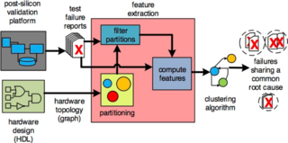
A Topological Approach to Hardware Bug Triage
pdf
Rico Angell, Benjamin Oztalay and Andrew DeOrio.
Microprocessor Test and Verification (MTV), Austin, TX, December 2015.
Papers
Long Term Effects of Partner Programming in an Introductory Computer Science Sequence
Andrew Giugliano and Andrew DeOrio.
American Society of Engineering Education (ASEE), New Orleans, LA, June, 2016.
To appear.
A Topological Approach to Hardware Bug Triage
pdf
Rico Angell, Benjamin Oztalay and Andrew DeOrio.
Microprocessor Test and Verification (MTV), Austin, TX, December 2015.
Detecting Anomalous Behavior in Infusion Pumps from the AC Power Line
Andrew DeOrio, Benjamin Ransford, Denis Foo Kune and Kevin Fu.
white paper, July 2015.
Post-silicon Validation of Multi-Processor Memory Consistency
pdf
Biruk Mammo, Valeria Bertacco, Andrew DeOrio and Ilya Wagner.
IEEE Transactions on Computer-Aided Design (TCAD), Volume 34, Issue 6, June 2015.
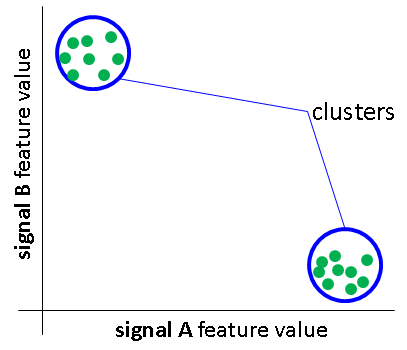
Machine Learning-based Anomaly Detection for Post-silicon Bug Diagnosis
pdf
Andrew DeOrio, Qingkun Li, Matthew Burgess and Valeria Bertacco.
Design Automation and Test in Europe (DATE), Grenoble, France, March 2013.
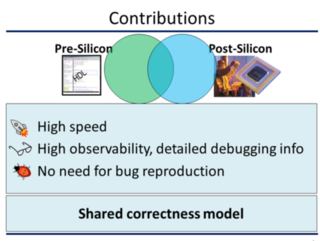
Bridging Pre- and Post-silicon Debugging with BiPeD
pdf
Andrew DeOrio, Jialin Li and Valeria Bertacco.
International Conference on Computer-Aided Design (ICCAD) San Jose, CA, November 2012.
A Reliable Routing Architecture and Algorithm for NoCs
pdf
Andrew DeOrio, David Fick, Valeria Bertacco, Dennis Sylvester, David Blaauw, Jin Hu and Gregory Chen.
IEEE Transactions on Computer-Aided Design (TCAD), Volume 31, Issue 5, May 2012.
Comprehensive Online Defect Diagnosis in On-Chip Networks
pdf
Amirali Ghofrani, Ritesh Parikh, Saeed Shamshiri, Andrew DeOrio, Kwang-Ting Cheng, Valeria Bertacco.
IEEE VLSI Test Symposium (VTS), Maui, Hawaii, April 2012.
Post-Silicon Bug Diagnosis with Inconsistent Executions
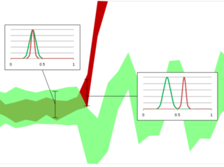
pdf
Andrew DeOrio, Daya Khudia and Valeria Bertacco.
International Conference on Computer-Aided Design (ICCAD), San Jose, CA, November 2011.
Functional Correctness for CMP Interconnects
pdf
Rawan Abdel-Khalek, Ritesh Parikh, Andrew DeOrio and Valeria Bertacco.
International Conference on Computer Design (ICCD), Amherst, MA, October 2011.
ARIADNE: Agnostic Reconfiguration In A Disconnected Network Environment
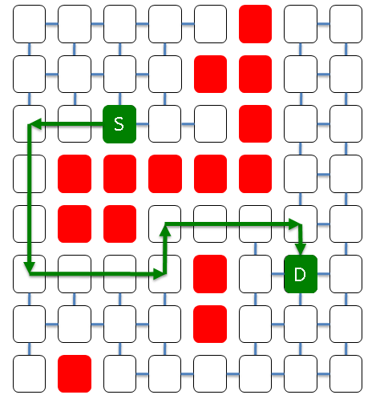
pdf
Konstantinos Aisopos, Andrew DeOrio, Li-Shiuan Peh and Valeria Bertacco.
Parallel Architectures and Compilation Techniques (PACT), Galveston Island, Texas, October 2011.
DRAIN: Distributed Recovery Architecture for Inaccessible Nodes in Multi-core Chips
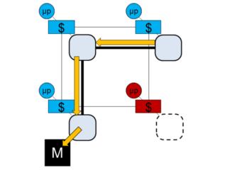
pdf
Andrew DeOrio, Kostantinos Aisopos, Valeria Bertacco and Li-Shiuan Peh.
Design Automation Conference (DAC), San Diego, CA, June 2011.
Gate-Level Simulation with GPU Computing
pdf
Debapriya Chatterjee, Andrew DeOrio and Valeria Bertacco.
ACM Transactions on Design Automation of Electronic Systems (TODAES), Volume 16, Issue 3, June 2011.
High Performance Gate-Level Simulation with GP-GPUs
buy
Debapriya Chatterjee, Andrew DeOrio and Valeria Bertacco.
chapter in GPU Computing Gems, Morgan Kaufmann, 2011.
Model Checking Social Networks
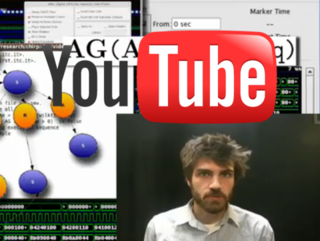
pdf
EE Times
Andrew DeOrio and Valeria Bertacco.
Design Automation Conference (DAC), Anaheim, CA, June 2010.
Human Computing for EDA
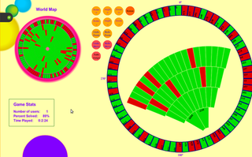
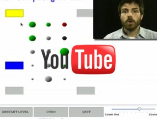
pdf
WACIest paper award,
SlashDot,
IEEE Spectrum,
Andrew DeOrio and Valeria Bertacco.
Design Automation Conference (DAC), San Francisco, CA, July 2009.
Event-Driven Gate-Level Simulation with GP-GPUs
pdf
Debapriya Chatterjee, Andrew DeOrio and Valeria Bertacco.
Design Automation Conference (DAC), San Francisco, CA, July 2009.
Vicis: A Reliable Network for Unreliable Silicon
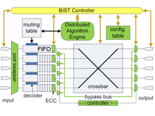
pdf
David Fick, Andrew DeOrio, Jin Hu, Valeria Bertacco, Dennis Sylvester and David Blaauw.
Design Automation Conference (DAC), San Francisco, CA, July 2009.
GCS: High Performance Gate-Level Simulation with GP-GPUs
pdf
Debapriya Chatterjee, Andrew DeOrio and Valeria Bertacco.
Design Automation and Test in Europe (DATE), Nice, France, April 2009.
A Highly Resilient Routing Algorithm for Fault-Tolerant NoCs
pdf
David Fick, Andrew DeOrio, Gregory Chen, Valeria Bertacco, Dennis Sylvester and David Blaauw.
Design Automation and Test in Europe (DATE), Nice, France, April 2009.
DACOTA: Post-silicon Validation of the Memory Subsystem in Multi-Core Designs
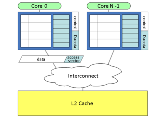
pdf
Andrew DeOrio, Ilya Wagner and Valeria Bertacco.
International Symposium on High-Performance Computer Architecture (HPCA), Raleigh, NC, February 2009.
INFERNO: Streamlining Verification with Inferred Semantics
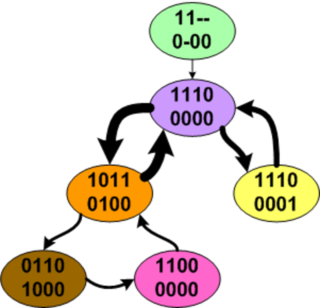
pdf
Andrew DeOrio, Adam Bauserman, Valeria Bertacco and Beth Isaksen.
IEEE Transactions on Computer-Aided Design (TCAD), Volume 28, Issue 5, May 2009.
Post-Silicon Verification for Cache Coherence
pdf
Andrew DeOrio, Adam Bauserman and Valeria Bertacco.
IEEE International Conference on Computer Design (ICCD), Lake Tahoe, CA, October 2008.
Chico: An On-Chip Hardware Checker for Pipeline Control Logic
pdf
Andrew DeOrio, Adam Bauserman and Valeria Bertacco.
International Workshop on Microprocessor Test and Verification (MTV), Austin, TX, December 2007.
Posters
RetDegenDx: A retinal dystrophy genetic diagnosis prediction tool
Dana Schlegel, Benjamin Katz, Vittorio Bichucher, Richmond Starbuck, Wei Xu, Jacob Durrah, Eman Al-Sharif, Andrew DeOrio, Naheed W. Khan and Kanishka T. Jayasundera.
Association for Research in Vision and Ophthalmology (ARVO), Seattle, WA, May, 2016.
Noninvasive Postmarket Security Monitoring for Medical Devices
Benjamin Ransford, Denis Foo Kune, Ann Gookin and Andrew DeOrio, Virta Laboratories, Inc.
Design of Medical Devices (DMD), Minneapolis, MN, April, 2016.
Long Term Effects of Partner Programming in an Introductory Computer Science Sequence
pdf
Andrew Giugliano and Andrew DeOrio.
University of Michigan Engineering Education Poster Fair, Ann Arbor, MI, April, 2016.
A Data-Driven Technique for Identifying Disease-Causing Genes in Patients with Retinal Dystrophy
more
Vittorio Bichucher, Jacob Durrah, Benjamin Katz, Richmond Starbuck, Wei Xu, Dana Schlegel, Thiran Jayasundera, Andrew DeOrio.
Neural Information Processing Systems (NIPS), Montreal, Canada, December 2015.
Hardware Bug Triage Using Machine Learning
pdf
Rico Angell, Benjamin Oztalay, Noel Bhattacharyya and Andrew DeOrio.
Design Automation Conference (DAC), San Francisco, CA, June 2015.
BPS: Bug Positioning System
pdf
Andrew DeOrio, Daya Khudia and Valeria Bertacco.
Design Automation Conference (DAC), San Diego, CA, June 2011.
Patents
System and Method for Statistical Post-Silicon Validation
Google Patents
Andrew DeOrio, Daya Shanker Khudia and Valeria Bertacco.
Patent application filed October 2012, U.S. Application No. 13/663,258
Gate-level Logic Simulator Using Multiprocessor Architectures
pdf |
Google Patents
Debapriya Chatterjee, Andrew DeOrio and Valeria Bertacco.
U.S. Patent No. 8,738,349, issued May 27, 2014.
Dissertation
Correct Communication in Multi-core Processors
pdf
Andrew DeOrio.
University of Michigan, Ann Arbor, MI, May 2012.
Invited Talks
 Malware on Drugs: Detecting Misbehaving Drug-delivering Medical Devices
more
Malware on Drugs: Detecting Misbehaving Drug-delivering Medical Devices
more
Andrew DeOrio
A2Y.asm Computer Security Conference, Ypsilanti, Michigan, September 2015.
Are They Getting It? Low-Stakes Ways to Assess Student Learning
Andrew DeOrio
The University of Michigan Center for Research on Learning and Teaching
Ann Arbor, Michigan, February 2013.
How to Give a Bad Lecture with a Tablet
Andrew DeOrio
The University of Michigan Enriching Scholarship Conference
Ann Arbor, Michigan, May 2013.